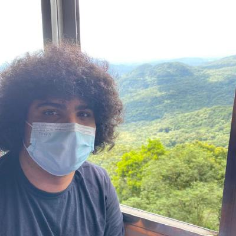

Sobre mim
Olá me chamo Pedro, como pode ser visto pelo nome da página, sou apaixonado por futebol, counter-strike e formula 1, sou flamenguista e torcedor da mercedes, atualmente trabalho desenvolvendo chatbots para Take Blip, maior empresa do ramo.
Gosto muito de estudar e aprender tecnologias novas, atualmente trabalho com C#, React e Javascript, tenho facilidade em aprender novas línguagens e em conversar com os clientes de forma direta, compreendendo suas dores e fazendo o levantamento de requisitos.